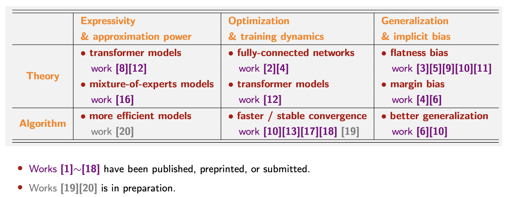

王铭泽
 |
王铭泽 (Mingze Wang) 北京大学 静园六院 210 室 电子邮箱: mingzewang [at] stu [dot] pku [dot] edu [dot] cn [Google Scholar] [简历] |
关于我
我是北京大学数学科学学院计算数学专业的最后一年直博生 (2021-现在)。 我非常荣幸能得到鄂维南院士的指导。 在此之前，我于 2021 年在浙江大学数学科学学院获得了数学与应用数学学士学位 (本科前三年排名为 1/111)。
如果您有兴趣与我合作，请随时给我发送电子邮件。
News
[2025.10] 我获得了 “字节跳动奖学金” (颁发给中国和新加坡共20名学生); 我的导师被授予最佳导师奖。
[2025.09] 一篇论文被 NeurIPS 2025 接收，并选为 Spotlight (前 3.5%)。
[2025.05] 一篇文章被 ICML 2025 接收。
[2025.01] 一篇文章被 ICLR 2025 接收，并选为 Spotlight (前 5.1%)。
[2024.12] 我获得了 “国家自然科学基金青年学生基础研究项目(博士研究生)” 资助。
[2024.09] 我获得了 “国家奖学金 (博士)” (全国前 0.2%)。
[2024.09] 三篇论文被 NeurIPS 2024 接收。
[2024.05] 一篇论文被 ICML 2024 接收；一篇论文被 ACL 2024 接收。
[2023.11] 我获得了 “北大数学研究生奖” (前 1%)。
[2023.09] 一篇论文被 NeurIPS 2023 接收，并选为 Spotlight (前 3.5%)。
[2022.11] 我通过了博士生资格考试。
[2022.10] 我获得了 “北京大学学术创新奖” (前 1%)。
[2022.09] 两篇论文被 NeurIPS 2022 接收。
研究兴趣
我对机器学习的理论、算法和应用有着广泛的兴趣。我对非凸和凸优化也很感兴趣。
最近，我致力于使用理论来优雅地设计算法。
我最近的研究课题是
深度学习理论：表达能力、优化理论、泛化理论、隐式偏好。[1][2][3][4][5][6][8][9][10][11][12][13][14][15][16][17][18][19]
Transformer和大型语言模型：理论与算法，特别在大模型预训练中。[8][10][12][13][16][17][18][19][20]
非凸和凸优化：理论与算法。[2][4][6][10][11][12][13][14][15][18][19]
具体来说，我在深度学习理论和算法方面的研究可以被概括为:
|  |
我目前的研究获得了 国家自然科学基金青年学生基础研究项目（博士研究生）的资助. (课题：大模型训练中Adam优化算法的分析和改进)
发表论文
* 表示平等贡献，† 表示主导项目.
[20] Low-probability Tokens Sustain Exploration in Reinforcement Learning with Verifiable Reward
Guanhua Huang* (黄冠华), Tingqiang Xu* (许庭强), Mingze Wang (王铭泽), Qi Yi, Xue Gong, Siheng Li, Ruibin Xiong, Kejiao Li, Yuhao Jiang, Bo Zhou (周波).
under review, arXiv preprint, 1-21. Sep 2025.[19] Towards Revealing the Effect of Batch Size Scheduling on Pre-training
Jinbo Wang* (王锦波), Binghui Li* (李柄辉), Zhanpeng Zhou (周展鹏), Mingze Wang (王铭泽), Yuxuan Sun, Jiaqi Zhang (张家绮), Xunliang Cai (蔡勋梁), Lei Wu (吴磊).
under review. Sep 2025.[18] GradPower: Powering Gradients for Faster Language Model Pre-Training
Mingze Wang*† (王铭泽), Jinbo Wang* (王锦波), Jiaqi Zhang (张家绮), Wei Wang (王玮), Peng Pei (裴鹏), Xunliang Cai (蔡勋梁), Weinan E (鄂维南), Lei Wu (吴磊).
under review, arXiv preprint, 1-22. May 2025.[17] A Mechanistic Study of Transformer Training Instability under Mixed Precision
Shengtao Guo (郭胜涛), Mingze Wang (王铭泽), Jinbo Wang (王锦波), Lei Wu (吴磊).
under review. May 2025.[16] On the Expressive Power of Mixture-of-Experts for Structured Complex Tasks
Mingze Wang† (王铭泽), Weinan E (鄂维南).
2025 Conference on Neural Information Processing Systems (NeurIPS 2025) (Spotlight, 前 3.5%), 1-18.[15] On the Learning Dynamics of Two-layer ReLU Networks with Label Noise SGD
Tongcheng Zhang (张桐铖), Zhanpeng Zhou (周展鹏), Mingze Wang (王铭泽), Andi Han, Wei Huang (黄伟), Taiji Suzuki, Junchi Yan (严骏驰).
2026 AAAI Conference on Artificial Intelligence (AAAI 2026) (Oral).[14] A Single Global Merging Suffices: Recovering Centralized Learning Performance in Decentralized Learning
Tongtian Zhu (朱同天), Tianyu Zhang (张天宇), Mingze Wang (王铭泽), Zhanpeng Zhou (周展鹏), Can Wang.
ICLR 2025 Workshop Weight Space Learning (ICLR 2025 - WSL), 1-23.[13] The Sharpness Disparity Principle in Transformers for Accelerating Language Model Pre-Training
Jinbo Wang* (王锦波), Mingze Wang*† (王铭泽), Zhanpeng Zhou* (周展鹏), Junchi Yan (严骏驰), Weinan E (鄂维南), Lei Wu (吴磊).
2025 International Conference on Machine Learning (ICML 2025), 1-23.[12] How Transformers Get Rich: Approximation and Dynamics Analysis
Mingze Wang†, Ruoxi Yu, Weinan E (鄂维南), Lei Wu (吴磊).
ICML 2025 Workshop on High-dimensional Learning Dynamics (ICML 2025 - HiLD), 1-47.[11] Sharpness-Aware Minimization Efficiently Selects Flatter Minima Late in Training
Zhanpeng Zhou (周展鹏)*, Mingze Wang* (王铭泽), Yuchen Mao, Bingrui Li (李炳睿), Junchi Yan (严骏驰).
2025 International Conference on Learning Representations (ICLR 2025) (Spotlight, 前 5.1%), 1-31.[10] Improving Generalization and Convergence by Enhancing Implicit Regularization
Mingze Wang† (王铭泽), Jinbo Wang (王锦波), Haotian He (何浩田), Zilin Wang (王梓麟), Guanhua Huang (黄冠华), Feiyu Xiong (熊飞宇), Zhiyu Li (李志宇), Weinan E (鄂维南), Lei Wu (吴磊)
2024 Conference on Neural Information Processing Systems (NeurIPS 2024), 1-44.[9] Loss Symmetry and Noise Equilibrium of Stochastic Gradient Descent
Liu Ziyin (刘子寅), Mingze Wang (王铭泽), Hongchao Li, Lei Wu (吴磊)
2024 Conference on Neural Information Processing Systems (NeurIPS 2024), 1-26.[8] Understanding the Expressive Power and Mechanisms of Transformer for Sequence Modeling
Mingze Wang (王铭泽), Weinan E (鄂维南)
2024 Conference on Neural Information Processing Systems (NeurIPS 2024), 1-76.[7] Are AI-Generated Text Detectors Robust to Adversarial Perturbations?
Guanhua Huang (黄冠华), Yuchen Zhang, Zhe Li, Yongjian You, Mingze Wang (王铭泽), Zhouwang Yang (杨周旺)
2024 Annual Meeting of the Association for Computational Linguistics (ACL 2024), 1-20.[6] Achieving Margin Maximization Exponentially Fast via Progressive Norm Rescaling
Mingze Wang† (王铭泽), Zeping Min (闵泽平), Lei Wu (吴磊)
2024 International Conference on Machine Learning (ICML 2024), 1-38.[5] A Theoretical Analysis of Noise Geometry in Stochastic Gradient Descent
Mingze Wang (王铭泽), Lei Wu (吴磊)
NeurIPS 2023 Workshop on Mathematics of Modern Machine Learning (NeurIPS 2023 - M3L), 1-30.[4] Understanding Multi-phase Optimization Dynamics and Rich Nonlinear Behaviors of ReLU Networks
Mingze Wang† (王铭泽), Chao Ma (马超)
2023 Conference on Neural Information Processing Systems (NeurIPS 2023) (Spotlight, 前 3.5%), 1-94.[3] The alignment property of SGD noise and how it helps select flat minima: A stability analysis
Lei Wu (吴磊), Mingze Wang (王铭泽), Weijie J. Su (苏炜杰)
2022 Conference on Neural Information Processing Systems (NeurIPS 2022), 1-25.[2] Early Stage Convergence and Global Convergence of Training Mildly Parameterized Neural Networks
Mingze Wang† (王铭泽), Chao Ma (马超)
2022 Conference on Neural Information Processing Systems (NeurIPS 2022), 1-73.[1] Generalization Error Bounds for Deep Neural Networks Trained by SGD
Mingze Wang† (王铭泽), Chao Ma (马超)
arXiv preprint, 1-32, June 2022.
部分奖项及荣誉
字节跳动奖学金 (颁发给中国和新加坡共20名学生); 我的导师被授予最佳导师奖, 2025.
国家自然科学基金青年学生基础研究项目(博士研究生) (30万元), 2024.
国家奖学金 (博士) (全国前 0.2%), 教育部, 2024.
校长奖学金, 北京大学, 2024; 2025.
北大数学研究生奖 (前 1%), 北京大学, 2023.
北京大学学术创新奖 (前 1%), 北京大学, 2022.
浙江省优秀毕业生 (前 5%), 浙江省, 2021.
浙江大学一等奖学金 (前 3%), 浙江大学, 2019; 2020.
国家奖学金 (本科) (全国前 0.2%), 教育部, 2019.